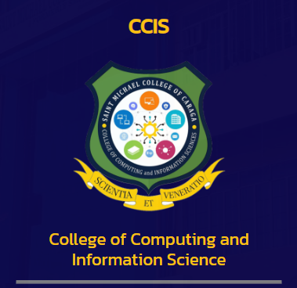

About SMCC
At Saint Michael College of Caraga, we are dedicated to providing a nurturing environment that fosters academic excellence, personal growth, and a passion for learning. With a team of experienced educators and a diverse range of extracurricular opportunities, we ensure every student reaches their full potential and is prepared for success in the real world.
Courses
Basic Education
Nursery
KinderGarten
Elementary
Junior High School
Senior High School
ABM (Accountancy, Business, and Management)
GAS (General Academic Strand)
HUMSS (Humanities and Social Sciences)
STEM (Science, Technology, Engineering and Mathematics)
Maritime
College
College of Arts and Sciences
.png)
College of Teacher Education

College of Criminal Justice Education

College of Tourism and Hospitality Management

College of Business and Management
.png)
College of computing and Information Sciences
Student Services
ADMISSION REQUIREMENTS
As a general policy on admission, the school shall accept new and returning pupils/students provided they meet the following requirements:1. Preschool (New)
Age Requirement:Nursery - Four (4) Years Old on or before October 31
Kindergarten - Five (5) Years Old on or before October 31
Photocopy of the Authenticated PSA Birth Certificate
Two (2) pcs. 2x2 colored picture
Interview with the Principal
Marriage Contract of the Parents (optional)
2. Grade 1
Age Requirement:Grade 1 - Six (6) Years Old on or before October 31
Photocopy of the Authenticated PSA Birth Certificate
Form 138 (Report Card Preschool Education)
Two (2) pcs. 2x2 colored picture
Marriage Contract of the Parents (optional)
Passed the Reading Test
Certificate of Completion (Photocopy)
3. Returning Pupils / Students
Final Examination Permit / ClearanceForm 138
4. High School
Photocopy of the Authenticated PSA Birth CertificateForm 138 (Report Card from Grade 6)
Certificate of Good Moral Character
Two (2) pcs. 2x2 colored picture
Interview with the Principal
Marriage Contract of the Parents (optional)
5. College First Year Students except BSED and BEED Programs
Form 138 (Report Card)Photocopy of the Authenticated PSA Birth Certificate
Two (2) pcs. 2x2 colored picture
1 long brown size envelope
1 long cellophane envelope
Good Moral Certification from the Principal
Passed the Reading and Multiplication Table Tests
Marriage Contract (if married)
Photocopy of PWD ID from DSWD (if PWD)
Photocopy of any proof if 4Ps/Listahan 2.0 member or Household Number
Certificate of Residency (if resident from Nasipit)
NCAE Result
6. College First Year BSED and BEED Students
Form 138 (Report Card) with General Average of 85%Photocopy of the Authenticated PSA Birth Certificate
Two (2) pcs. 2x2 colored picture
1 long brown size envelope
1 long cellophane envelope
Good Moral Certification from the Principal
Passed the Reading and Multiplication Table Tests
Student Aptitude Test for Teachers (SATT) score of not less than 167
IQ Test (OLSAT) score of not less than 31
NCAE Result
Marriage Contract (if married)
Photocopy of PWD ID from DSWD (if PWD)
Photocopy of any proof if 4Ps/Listahan 2.0 member or Household Number
Certificate of Residency (if resident from Nasipit)
7. Basic Education Transferees
Passed the Entrance Examination (written and oral)Form 138
Photocopy of the Authenticated PSA Birth Certificate
Certificate of Good Moral Character
Two (2) pcs. 2x2 colored picture
Interview with the Principal
Marriage Contract of the Parents (optional)
Passed the Reading and Multiplication Table Tests
8. College Transferees (non-educational programs and TESDA Programs except Seafarer)
Honorable DismissalTranscript of Records
Photocopy of the Authenticated PSA Birth Certificate
Passed the Reading and Multiplication Table Test
Two (2) pcs. 2x2 latest colored picture
1 long brown sized envelope
1 long cellophane envelope
Good Moral Certification
Marriage Contract (if married)
Photocopy of PWD ID from DSWD (if PWD)
Photocopy of any proof if 4Ps/Listahan 2.0 member or Household Number
Certificate of Residency (if resident from Nasipit)
9. College Transferees (BSED and BEED Programs)
Honorable DismissalTranscript of Records General Average of 85%
Photocopy of the Authenticated PSA Birth Certificate
Passed the Reading and Multiplication Table Tests
Two (2) pcs. 2x2 colored picture
1 long brown size envelope
1 long cellophane envelope
Good Moral Certification
Marriage Contract (if married)
Photocopy of PWD ID from DSWD (if PWD)
Photocopy of any proof if 4Ps/Listahan 2.0 member or Household Number
Certificate of Residency (if resident from Nasipit)
10. Seafarer
Form 138 (Report Card)Photocopy of the Authenticated PSA Birth Certificate
Must be 18 Years Old on or before the date of completion
Two (2) pcs. 2x2 colored picture
1 long brown size envelope
1 long cellophane envelope
Good Moral Certification from the Principal
Passed the Reading and Multiplication Table Tests
NCAE Result
Marriage Contract (if married)
11. Aliens / Naturalized Filipinos
Passed the Entrance Examination (written and oral)Form 138
Photocopy of the Authenticated PSA Birth Certificate (translated in English)
Certificate of Good Moral Character
Two (2) pcs. 2x2 colored picture
Interview with the Principal
Alien Certification of Registration (ACR)
Study Permit from the Bureau of Immigration
Photocopies of child's and parent's passport and visa
Marriage Contract of Parents (optional)
Contact Us
Reach us out with these following contact deatails...